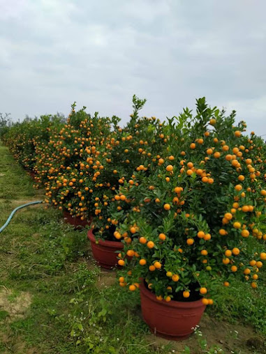
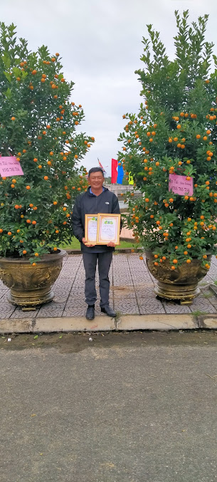
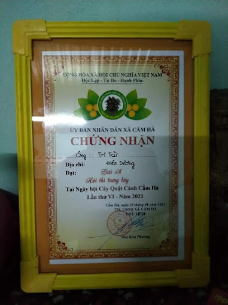

Nếu bạn đang tìm mua quất tết tại Đà Nẵng, Hội An hoặc Điện Bàn, có thể bạn đã nghe tên Vườn Quất Tri - Tài. Bài viết này là câu chuyện thật của vườn — con người, đất đai, và hành trình hơn một thập kỷ gắn bó với cây quất cảnh tết.
1. Vườn ở đâu?
Vườn Quất Tri - Tài nằm tại Phường Điện Bàn Đông, thuộc thị xã Điện Bàn, tỉnh Quảng Nam — ngay vùng giáp ranh với quận Ngũ Hành Sơn, Đà Nẵng. Vị trí này cực kỳ thuận tiện:
- Cách trung tâm Đà Nẵng khoảng 15–20km, chạy xe chưa đến 25 phút
- Cách Hội An khoảng 18–22km, đi theo đường ven biển hoặc QL1A
- Nằm trong vùng Điện Dương – Điện Ngọc – Điện Bàn Đông, là dải đất phù sa pha cát lý tưởng để trồng quất
Đây không phải ngẫu nhiên. Người trồng quất ở Điện Bàn Đông đã chọn vùng đất này từ nhiều thế hệ trước vì khí hậu ôn hòa, ít sương muối, đất thoáng rễ, và lượng nắng đủ để quả vàng đều mà không bị nứt.

2. Chủ vườn — Phan Hùng Tri
Chủ vườn Phan Hùng Tri sinh ra và lớn lên tại Điện Bàn. Ông bắt đầu trồng quất từ khi còn phụ cha làm vườn, và dần hiểu rằng đây không chỉ là nghề mưu sinh mà còn là nghề giữ lấy một nét văn hóa của người miền Trung — cây quất tết gắn với tài lộc, sum vầy, khởi đầu năm mới.


Hơn 10 năm kinh nghiệm, ông Tri hiểu từng giai đoạn của cây quất: khi nào cần cắt tỉa, khi nào bón phân, làm sao để quả vàng đúng dịp 23–27 tháng Chạp. Kỹ thuật tạo hình bonsai, uốn thế — những điều ông học từ sách, từ thực hành và từ những lần thất bại trước khi làm đúng.
3. Vườn trồng những gì?
Hiện tại vườn Tri - Tài canh tác hơn 1.000 cây mỗi mùa tết, gồm các loại:
| Loại cây | Đặc điểm | Phù hợp |
|---|---|---|
| Quất cảnh truyền thống | Tán tròn, quả đều, dáng tự nhiên | Phòng khách, ban thờ |
| Quất bonsai – cây thế | Tạo hình dáng uốn, thế độc đáo | Khách sạn, công ty, biệt thự |
| Quất ghép – đa thân | Nhiều gốc ghép một chậu, tán sum xuê | Sân vườn, cổng nhà |
| Quất mini | Nhỏ gọn, xinh xắn | Bàn làm việc, quà tặng |
Các dòng sản phẩm chính tại vườn Tri - Tài — từ quất truyền thống đến bonsai cao cấp.
4. Quy trình chăm sóc tự nhiên
Điều ông Tri tự hào nhất là vườn không dùng hóa chất độc hại để thúc cây hoặc giữ màu quả. Toàn bộ quy trình chăm bón dựa trên:
- Phân hữu cơ vi sinh — bón định kỳ theo từng giai đoạn sinh trưởng
- Điều chỉnh tưới nước — giảm nước từ tháng 9 để kích thích ra hoa, đậu quả đồng đều
- Cắt tỉa thủ công — tỉa cành yếu, cành mọc lộn xộn để cây tập trung nuôi quả
- Phòng bệnh sinh học — xử lý sâu bọ bằng thuốc nguồn gốc thực vật, không để tồn dư
Cây khỏe từ bên trong nên quả đẹp tự nhiên, để được lâu sau khi đem về nhà — không cần xịt thêm gì.
5. Phục vụ sỉ và lẻ — giao tận nơi
Vườn Tri - Tài nhận đơn sỉ từ 10 chậu trở lên dành cho đại lý, chợ hoa, công ty, resort. Giá sỉ ưu đãi theo số lượng, có xe tải giao đến tận nơi trong bán kính 40km bao gồm toàn bộ Đà Nẵng, Hội An, Điện Bàn và các huyện Quảng Nam lân cận.
Đơn lẻ từ 1 chậu — ông Tri trực tiếp tư vấn chọn cây phù hợp kích thước phòng, ngân sách và phong thủy gia chủ.

6. Đặt hàng trước mùa tết — vì sao quan trọng?
Quất bonsai và quất thế cần ít nhất 2–3 tháng để tạo hình theo yêu cầu. Nếu bạn muốn cây thế dáng hạc, thế long hoặc kích thước đặc biệt cho sảnh khách sạn, công ty — cần đặt trước từ tháng 9–10 Âm lịch.
Quất truyền thống và quất lớn cũng nhanh hết hàng từ ngày 20 tháng Chạp trở đi. Đặt sớm đảm bảo bạn được chọn cây đẹp nhất vườn.
Xem thêm: Đặc điểm quất tết Điện Bàn Đông khác gì nơi khác? · Vì sao nên đặt quất trước 2–3 tháng?